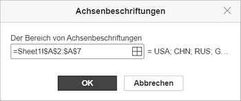
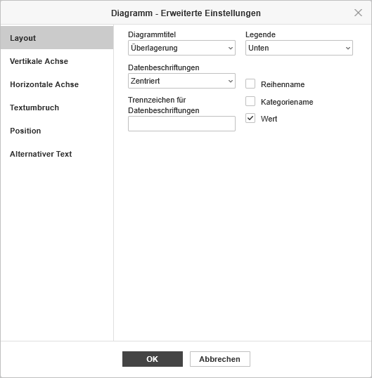
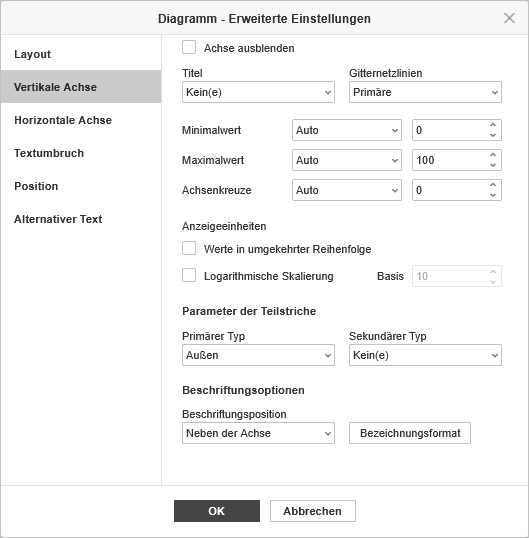
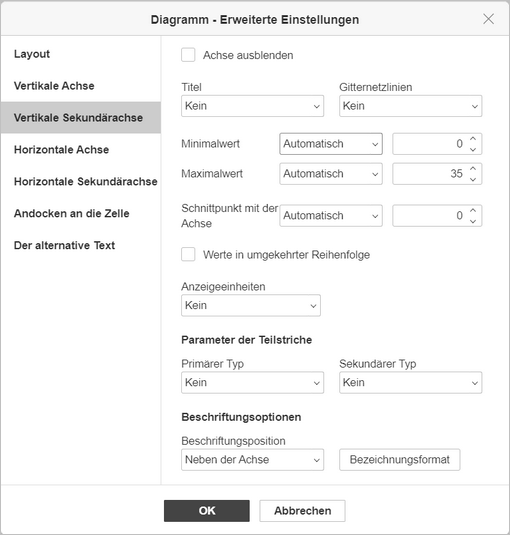
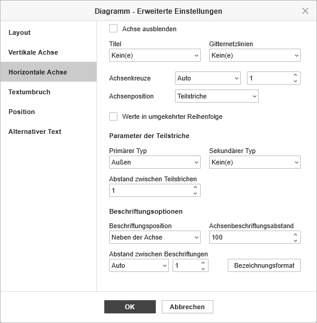
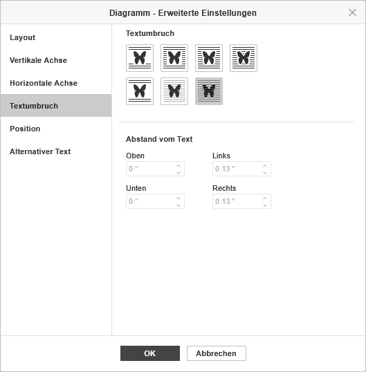
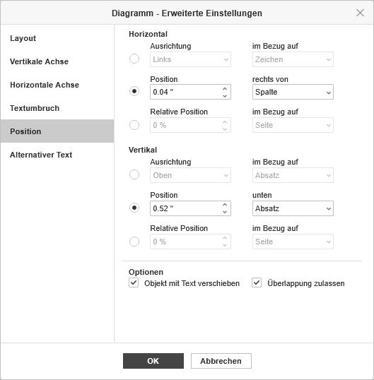
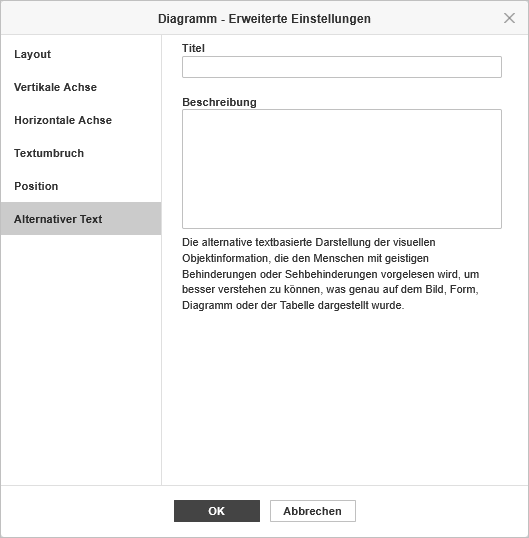
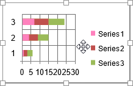
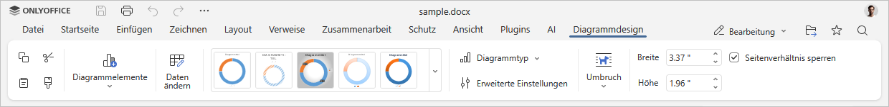

Diagramm einfügen
Um ein Diagramm im Dokumenteneditor einzufügen:
- Positionieren Sie den Cursor an der Stelle, an der das Diagramm eingefügt werden soll.
- Wechseln Sie zur Registerkarte Einfügen in der oberen Symbolleiste.
- Klicken Sie auf das Symbol Diagramm in der oberen Symbolleiste.
-
Wählen Sie den benötigten Diagrammtyp aus den verfügbaren aus:
Spalte
- Gruppierte Säule
- Gestapelte Säulen
- 100% Gestapelte Säule
- Gruppierte 3D-Säule
- Gestapelte 3D-Säule
- 3-D 100% Gestapelte Säule
- 3D-Säule
Linie
- Linie
- Gestapelte Linie
- 100% Gestapelte Linie
- Linie mit Datenpunkten
- Gestapelte Linie mit Datenpunkten
- 100% Gestapelte Linie mit Datenpunkten
- 3D-Linie
Kreis
- Kreis
- Ring
- 3D-Kreis
Balken
- Gruppierte Balken
- Gestapelte Balken
- 100% Gestapelte Balken
- Gruppierte 3D-Balken
- Gestapelte 3D-Balken
- 3-D 100% Gestapelte Balken
Fläche
- Fläche
- Gestapelte Fläche
- 100% Gestapelte Fläche
Kurs
Punkte (XY)
- Punkte
- Punkte mit interpolierten Linien und Datenpunkten
- Punkte mit interpolierten Linien
- Punkte mit geraden Linien und Datenpunkten
- Punkte mit geraden Linien
Radardiagramm
- Radar
- Radar mit Markierungen
- Gefülltes Radardiagramm
Verbund
- Gruppierte Säulen — Linie
- Gruppierte Säulen / Linien auf der Sekundärachse
- Gestapelte Flächen / Gruppierte Säulen
- Benutzerdefinierte Kombination
ONLYOFFICE Dokumenteneditor unterstützt folgende Diagrammtypen, die mit Drittanbieter-Editoren erstellt wurden: Pyramide, Balken (Pyramide), horizontale/vertikale Zylinder, horizontale/vertikale Kegel. Sie können die Datei, die ein solches Diagramm enthält, öffnen und sie mit den verfügbaren Diagrammbearbeitungswerkzeugen ändern. Die folgenden Typen werden nur zum Öffnen unterstützt: Histogramm, Wasserfall, Trichter, Explosion.
Es ist auch möglich, Diagrammdaten aus dem Tabellenkalkulationseditor einzufügen. Wenn Sie die kopierten Daten einfügen, klicken Sie auf die Einfügeoptionen-Schaltfläche Strg unten rechts im eingefügten Diagramm:
- Quellformatierung beibehalten und Daten verknüpfen (F) — die ursprüngliche Formatierung wird beibehalten und die Daten sind mit der Quelldatei verknüpft.
- Quellformatierung beibehalten und Arbeitsmappe einbetten (K) — die ursprüngliche Formatierung wird beibehalten und das Diagramm wird in der aktuellen Datei eingebettet.
-
Danach erscheint das Fenster Diagramm bearbeiten, in dem Sie die erforderlichen Daten in die Zellen mit folgenden Steuerelementen eingeben können:
- und zum Kopieren und Einfügen der kopierten Daten
- und zum Rückgängig machen und Wiederherstellen von Aktionen
- zum Einfügen einer Funktion
- und zum Verringern und Erhöhen der Dezimalstellen
 zum Ändern des Zahlenformats, d. h. der Darstellung der eingegebenen Zahlen in den Zellen
zum Ändern des Zahlenformats, d. h. der Darstellung der eingegebenen Zahlen in den Zellen

-
Klicken Sie im Fenster Diagramm bearbeiten auf die Schaltfläche Daten auswählen. Das Fenster Diagrammdaten wird geöffnet.
-
Verwenden Sie den Dialog Diagrammdaten, um Diagrammdatenbereich, Legendeneinträge (Reihen), Horizontale Achsenbeschriftungen (Rubrik) und Zeile/Spalte wechseln zu verwalten.

-
Diagrammdatenbereich — wählen Sie die Daten für Ihr Diagramm aus.
-
Klicken Sie auf das Symbol rechts neben dem Feld Diagrammdatenbereich, um den Datenbereich auszuwählen.

-
Klicken Sie auf das Symbol rechts neben dem Feld Diagrammdatenbereich, um den Datenbereich auszuwählen.
-
Legendeneinträge (Reihen) — fügen Sie Legenden-Einträge hinzu, bearbeiten oder entfernen Sie diese. Geben Sie den Namen der Datenreihe für die Legenden-Einträge ein oder wählen Sie ihn aus.
- Klicken Sie in Legendeneinträge (Reihen) auf die Schaltfläche Hinzufügen.
-
Geben Sie im Fenster Datenreihe bearbeiten einen neuen Legenden-Eintrag ein oder klicken Sie auf das Symbol rechts neben dem Feld Reihenname.

-
Horizontale Achsenbeschriftungen (Rubrik) — ändern Sie den Text für die Kategorienbeschriftungen.
- Klicken Sie in Horizontale Achsenbeschriftungen (Rubrik) auf Bearbeiten.
-
Geben Sie im Feld Achsenbeschriftungsbereich die gewünschten Beschriftungen ein oder klicken Sie auf das Symbol rechts neben dem Feld Der Bereich von Achsenbeschriftungen, um den Datenbereich auszuwählen.

- Zeile/Spalte wechseln — tauschen Sie die Arbeitsblattdaten, die im Diagramm konfiguriert sind, wenn sie nicht wie gewünscht angezeigt werden. Wechseln Sie Zeilen zu Spalten, um Daten auf einer anderen Achse darzustellen.
-
Diagrammdatenbereich — wählen Sie die Daten für Ihr Diagramm aus.
- Klicken Sie auf die Schaltfläche OK, um die Änderungen zu übernehmen und das Fenster zu schließen.
-
Verwenden Sie den Dialog Diagrammdaten, um Diagrammdatenbereich, Legendeneinträge (Reihen), Horizontale Achsenbeschriftungen (Rubrik) und Zeile/Spalte wechseln zu verwalten.
-
Klicken Sie auf der Registerkarte Diagrammdesign auf die Schaltfläche Diagrammtyp, um den Diagrammtyp und -stil auszuwählen. Wählen Sie ein Diagramm aus den verfügbaren Kategorien: Spalte, Linie, Kreis, Balken, Fläche, Kurs, Punkt (XY ), Radar oder Verbund.

Wenn Sie Verbunddiagramme wählen, listet das Fenster Diagrammtyp die Datenreihen auf und ermöglicht die Auswahl der zu kombinierenden Diagrammtypen sowie die Auswahl der Datenreihen, die auf einer sekundären Achse dargestellt werden sollen.

-
Ändern Sie die Diagrammeinstellungen, indem Sie auf der Registerkarte Diagrammdesign auf die Schaltfläche Erweiterte Einstellungen klicken. Das Fenster Diagramm — Erweiterte Einstellungen wird geöffnet.

Die Registerkarte Layout ermöglicht es Ihnen, das Layout der Diagrammelemente zu ändern.
-
Legen Sie die Position des Diagrammtitels in Bezug auf Ihr Diagramm fest, indem Sie die erforderliche Option aus der Dropdown-Liste auswählen:
- Kein, um keinen Diagrammtitel anzuzeigen,
- Überlagerung, um den Titel über dem Diagrammbereich zentriert anzuzeigen,
- Ohne Überlagerung, um den Titel über dem Diagrammbereich anzuzeigen.
-
Legen Sie die Position der Legende in Bezug auf Ihr Diagramm fest, indem Sie die erforderliche Option aus der Dropdown-Liste auswählen:
- Kein, um keine Legende anzuzeigen,
- Unten, um die Legende anzuzeigen und unten am Diagrammbereich auszurichten,
- Oben, um die Legende anzuzeigen und oben am Diagrammbereich auszurichten,
- Rechts, um die Legende anzuzeigen und rechts am Diagrammbereich auszurichten,
- Links, um die Legende anzuzeigen und links am Diagrammbereich auszurichten,
- Überlagerung links, um die Legende links vom Diagrammbereich zentriert zu überlagern,
- Überlagerung rechts, um die Legende rechts vom Diagrammbereich zentriert zu überlagern.
-
Legen Sie die Parameter der Datenbeschriftungen (d. h. Textbeschriftungen, die genaue Werte von Datenpunkten darstellen) fest:
-
Legen Sie die Position der Datenbeschriftungen relativ zu den Datenpunkten fest, indem Sie die erforderliche Option aus der Dropdown-Liste auswählen. Die verfügbaren Optionen variieren je nach ausgewähltem Diagrammtyp.
- Für Spalten-/Balken-Diagramme können Sie folgende Optionen wählen: Kein, Zentriert, Innen Untere, Innen oben, Außen oben.
- Für Linien-/Punkt (XY)/Aktien-Diagramme können Sie folgende Optionen wählen: Kein, Zentriert, Links, Rechts, Oben, Unten.
- Für Kreis-Diagramme können Sie folgende Optionen wählen: Kein, Zentriert, Breite anpassen, Innen oben, Außen oben.
- Für Fläche-Diagramme sowie für 3D Spalten, Linie, Balken, Radar und Verbund-Diagramme können Sie folgende Optionen wählen: Kein, Zentriert.
- Wählen Sie die Daten aus, die Sie in Ihre Beschriftungen aufnehmen möchten, indem Sie die entsprechenden Kontrollkästchen aktivieren: Datenreihenname, Kategoriename, Wert,
- Geben Sie ein Zeichen (Komma, Semikolon usw.) ein, das Sie zur Trennung mehrerer Beschriftungen im Feld Trennzeichen für Datenbeschriftungen verwenden möchten.
-
Legen Sie die Position der Datenbeschriftungen relativ zu den Datenpunkten fest, indem Sie die erforderliche Option aus der Dropdown-Liste auswählen. Die verfügbaren Optionen variieren je nach ausgewähltem Diagrammtyp.
- Linien — wird verwendet, um einen Linienstil für Linien-/Punkt (XY)-Diagramme auszuwählen. Sie können eine der folgenden Optionen wählen: Gerade, um gerade Linien zwischen Datenpunkten zu verwenden, Glatt, um glatte Kurven zwischen Datenpunkten zu verwenden, oder Kein, um keine Linien anzuzeigen.
-
Marker — wird verwendet, um festzulegen, ob die Markierungen für Linien-/Punkt (XY)-Diagramme angezeigt werden sollen (wenn das Kästchen aktiviert ist) oder nicht (wenn das Kästchen deaktiviert ist).
Hinweis: Die Optionen Linien und Marker sind nur für Liniendiagramme und Punkt (XY) Diagramme verfügbar.

Die Registerkarte Vertikale Achse ermöglicht es Ihnen, die Parameter der vertikalen Achse zu ändern, die auch als Wertachse oder y-Achse bezeichnet wird und numerische Werte anzeigt. Beachten Sie, dass die vertikale Achse bei Balkendiagrammen die Kategorienachse ist, die Textbeschriftungen anzeigt. In diesem Fall entsprechen die Optionen der Registerkarte Vertikale Achse den im nächsten Abschnitt beschriebenen. Für Punkt (XY) Diagramme sind beide Achsen Wertachsen.
Hinweis: Die Abschnitte Achseneinstellungen und Gitternetzlinien sind für Kreisdiagramme deaktiviert, da diese Diagrammtypen keine Achsen und Gitternetzlinien haben.
- Wählen Sie Achse ausblenden, um die vertikale Achse im Diagramm auszublenden, lassen Sie das Kästchen deaktiviert, um die vertikale Achse anzuzeigen.
-
Legen Sie die Ausrichtung des Titels fest, indem Sie die erforderliche Option aus der Dropdown-Liste auswählen:
- Kein, um keinen Titel der vertikalen Achse anzuzeigen,
- Gedreht, um den Titel von unten nach oben links neben der vertikalen Achse anzuzeigen,
- Horizontal, um den Titel horizontal links neben der vertikalen Achse anzuzeigen.
- Minimalwert — wird verwendet, um den niedrigsten Wert am Anfang der vertikalen Achse festzulegen. Die Option Automatisch ist standardmäßig ausgewählt, in diesem Fall wird der Minimalwert automatisch anhand des ausgewählten Datenbereichs berechnet. Sie können die Option Fest aus der Dropdown-Liste auswählen und einen anderen Wert im Eingabefeld rechts angeben.
- Maximalwert — wird verwendet, um den höchsten Wert am Ende der vertikalen Achse festzulegen. Die Option Automatisch ist standardmäßig ausgewählt, in diesem Fall wird der Maximalwert automatisch anhand des ausgewählten Datenbereichs berechnet. Sie können die Option Fest aus der Dropdown-Liste auswählen und einen anderen Wert im Eingabefeld rechts angeben.
- Schnittpunkt mit der Achse — wird verwendet, um einen Punkt auf der vertikalen Achse festzulegen, an dem die horizontale Achse sie kreuzen soll. Die Option Automatisch ist standardmäßig ausgewählt, in diesem Fall wird der Schnittpunktwert der Achsen automatisch anhand des ausgewählten Datenbereichs berechnet. Sie können die Option Wert aus der Dropdown-Liste auswählen und einen anderen Wert im Eingabefeld rechts angeben oder den Schnittpunkt der Achsen am Minimal-/Maximalwert auf der vertikalen Achse festlegen.
- Anzeigeeinheiten — wird verwendet, um die Darstellung der numerischen Werte entlang der vertikalen Achse zu bestimmen. Diese Option ist nützlich, wenn Sie mit großen Zahlen arbeiten und die Werte auf der Achse kompakter und lesbarer anzeigen möchten (z. B. können Sie 50.000 als 50 darstellen, indem Sie die Anzeigeeinheiten Tausend verwenden). Wählen Sie die gewünschten Einheiten aus der Dropdown-Liste: Hunderte, Tausende, 10.000, 100.000, Millionen, 10.000.000, 100.000.000, Milliarden, Billionen oder wählen Sie die Option Kein, um zu den Standard-Einheiten zurückzukehren.
- Werte in umgekehrter Reihenfolge — wird verwendet, um Werte in umgekehrter Richtung anzuzeigen. Wenn das Kästchen deaktiviert ist, befindet sich der niedrigste Wert unten und der höchste Wert oben auf der Achse. Wenn das Kästchen aktiviert ist, sind die Werte von oben nach unten geordnet.
- Logarithmische Skalierung — wird verwendet, um eine logarithmische Skalierung mit der vom Benutzer bestimmten Basis zu aktivieren.
-
Der Abschnitt Parameter der Teilstriche ermöglicht die Anpassung des Aussehens der Teilstriche auf der vertikalen Skala. Primärere Teilstriche sind die größeren Skalenunterteilungen, die Beschriftungen mit numerischen Werten haben können. Sekundärere Teilstriche sind die Skalenunterteilungen zwischen den primäreren Teilstrichen und haben keine Beschriftungen. Teilstriche definieren auch, wo Gitternetzlinien angezeigt werden können, wenn die entsprechende Option auf der Registerkarte Layout aktiviert ist. Die Dropdown-Listen Primärer-/Sekundärer Typ enthalten folgende Platzierungsoptionen:
- Kein, um keine primäreren/sekundäreren Teilstriche anzuzeigen,
- Schnittpunkt, um primärere/sekundärere Teilstriche auf beiden Seiten der Achse anzuzeigen,
- In, um primärere/sekundärere Teilstriche innerhalb der Achse anzuzeigen,
- Außen, um primärere/sekundärere Teilstriche außerhalb der Achse anzuzeigen.
-
Der Abschnitt Beschriftungsoptionen ermöglicht die Anpassung des Aussehens der Beschriftungen der primäreren Teilstriche, die Werte anzeigen. Um eine Beschriftungsposition in Bezug auf die vertikale Achse festzulegen, wählen Sie die erforderliche Option aus der Dropdown-Liste:
- Kein, um keine Beschriftungen der Teilstriche anzuzeigen,
- Niedrig, um Beschriftungen links vom Diagrammbereich anzuzeigen,
- Hoch, um Beschriftungen rechts vom Diagrammbereich anzuzeigen,
- Neben der Achse, um Beschriftungen neben der Achse anzuzeigen.
-
Um ein Bezeichnungsformat festzulegen, klicken Sie auf die Schaltfläche Bezeichnungsformat und wählen Sie eine Kategorie nach Bedarf aus.
Verfügbare Kategorien für das Bezeichnungsformat:
- Allgemein
- Nummer
- Wissenschaftlich
- Rechnungswesen
- Währung
- Datum
- Zeit
- Prozentsatz
- Bruch
- Text
- Benutzerdefiniert
Die Optionen für das Beschriftungsformat variieren je nach ausgewählter Kategorie. Weitere Informationen zum Ändern des Zahlenformats finden Sie auf dieser Seite.
- Aktivieren Sie Mit Quelle verknüpft, um die Zahlenformatierung aus der Datenquelle im Diagramm beizubehalten.

Hinweis: Sekundärachsen werden nur in Verbunddiagrammen unterstützt.
Sekundärachsen sind in Verbunddiagrammen nützlich, wenn sich Datenreihen stark unterscheiden oder gemischte Datentypen zur Diagrammerstellung verwendet werden. Sekundärachsen erleichtern das Lesen und Verstehen eines Kombinationsdiagramms.
Die Registerkarte Sekundäre vertikale/horizontale Achse erscheint, wenn Sie eine geeignete Datenreihe für ein Kombinationsdiagramm auswählen. Alle Einstellungen und Optionen auf der Registerkarte Sekundäre vertikale/horizontale Achse sind identisch mit denen der vertikalen/horizontalen Achse. Für eine detaillierte Beschreibung der Optionen der Vertikalen/horizontalen Achse siehe oben/unten.

Die Registerkarte Horizontale Achse ermöglicht es Ihnen, die Parameter der horizontalen Achse zu ändern, die auch als Kategorienachse oder x-Achse bezeichnet wird und Textbeschriftungen anzeigt. Beachten Sie, dass die horizontale Achse bei Balkendiagrammen die Wertachse ist, die numerische Werte anzeigt. In diesem Fall entsprechen die Optionen der Registerkarte Horizontale Achse den im vorherigen Abschnitt beschriebenen. Für Punkt (XY) Diagramme sind beide Achsen Wertachsen.
- Wählen Sie Achse ausblenden, um die horizontale Achse im Diagramm auszublenden, lassen Sie das Kästchen deaktiviert, um die horizontale Achse anzuzeigen.
-
Legen Sie die Ausrichtung des Titels fest, indem Sie die erforderliche Option aus der Dropdown-Liste auswählen:
- Kein, um keinen Titel der horizontalen Achse anzuzeigen,
- Ohne Überlagerung, um den Titel unter der horizontalen Achse anzuzeigen.
- Gitternetzlinien werden verwendet, um die Horizontalen Gitternetzlinien auszuwählen, die angezeigt werden sollen, indem Sie die erforderliche Option aus der Dropdown-Liste wählen: Kein, Haupt, Neben oder Haupt und Neben.
- Schnittpunkt mit der Achse — wird verwendet, um einen Punkt auf der horizontalen Achse festzulegen, an dem die vertikale Achse sie kreuzen soll. Die Option Automatisch ist standardmäßig ausgewählt, in diesem Fall wird der Schnittpunktwert der Achsen automatisch anhand des ausgewählten Datenbereichs berechnet. Sie können die Option Wert aus der Dropdown-Liste auswählen und einen anderen Wert im Eingabefeld rechts angeben oder den Schnittpunkt der Achsen am Minimal-/Maximalwert (entsprechend der ersten und letzten Kategorie) auf der horizontalen Achse festlegen.
- Achsenposition — wird verwendet, um festzulegen, wo die Achsenbeschriftungen platziert werden sollen: Auf den Teilstrichen oder Zwischen den Teilstrichen.
- Werte in umgekehrter Reihenfolge — wird verwendet, um Kategorien in umgekehrter Richtung anzuzeigen. Wenn das Kästchen deaktiviert ist, werden die Kategorien von links nach rechts angezeigt. Wenn das Kästchen aktiviert ist, sind die Kategorien von rechts nach links geordnet.
-
Der Abschnitt Parameter der Teilstriche ermöglicht die Anpassung des Aussehens der Teilstriche auf der horizontalen Skala. Primärere Teilstriche sind die größeren Unterteilungen, die Beschriftungen mit Kategorienwerten haben können. Sekundärere Teilstriche sind die kleineren Unterteilungen zwischen den primäreren Teilstrichen und haben keine Beschriftungen. Teilstriche definieren auch, wo Gitternetzlinien angezeigt werden können, wenn die entsprechende Option auf der Registerkarte Layout aktiviert ist. Sie können folgende Parameter der Teilstriche anpassen:
- Primärerer/Sekundärer Typ — wird verwendet, um folgende Platzierungsoptionen festzulegen: Kein, um keine primären/sekundären Teilstriche anzuzeigen, Schnittpunkt, um primäre/sekundäre Teilstriche auf beiden Seiten der Achse anzuzeigen, In, um primäre/sekundäre Teilstriche innerhalb der Achse anzuzeigen, Außen, um primäre/sekundäre Teilstriche außerhalb der Achse anzuzeigen.
- Abstand zwischen Teilstrichen — wird verwendet, um festzulegen, wie viele Kategorien zwischen zwei benachbarten Teilstrichen angezeigt werden sollen.
-
Der Abschnitt Beschriftungsoptionen ermöglicht die Anpassung des Aussehens der Beschriftungen, die Kategorien anzeigen.
- Beschriftungsposition — wird verwendet, um festzulegen, wo die Beschriftungen in Bezug auf die horizontale Achse platziert werden sollen. Wählen Sie die erforderliche Option aus der Dropdown-Liste: Kein, um keine Kategorienbeschriftungen anzuzeigen, Niedrig, um Kategorienbeschriftungen unten im Diagrammbereich anzuzeigen, Hoch, um Kategorienbeschriftungen oben im Diagrammbereich anzuzeigen, Neben der Achse, um Kategorienbeschriftungen neben der Achse anzuzeigen.
- Abstand bis zur Beschriftung — wird verwendet, um festzulegen, wie nah die Beschriftungen an der Achse platziert werden sollen. Sie können den erforderlichen Wert im Eingabefeld angeben. Je höher der Wert, desto größer der Abstand zwischen Achse und Beschriftungen.
- Abstand zwischen Beschriftungen — wird verwendet, um festzulegen, wie oft die Beschriftungen angezeigt werden sollen. Die Option Automatisch ist standardmäßig ausgewählt, in diesem Fall werden Beschriftungen für jede Kategorie angezeigt. Sie können die Option Manuell aus der Dropdown-Liste auswählen und den erforderlichen Wert im Eingabefeld rechts angeben. Zum Beispiel geben Sie 2 ein, um Beschriftungen für jede zweite Kategorie anzuzeigen usw.
-
Um ein Beschriftungsformat festzulegen, klicken Sie auf die Schaltfläche Beschriftungsformat und wählen Sie eine Kategorie nach Bedarf aus.
Verfügbare Kategorien für das Beschriftungsformat:
- Allgemein
- Nummer
- Wissenschaftlich
- Rechnungswesen
- Währung
- Datum
- Zeit
- Prozentsatz
- Bruch
- Text
- Benutzerdefiniert
Die Optionen für das Beschriftungsformat variieren je nach ausgewählter Kategorie. Weitere Informationen zum Ändern des Zahlenformats finden Sie auf dieser Seite.
- Aktivieren Sie Mit Quelle verknüpft, um die Zahlenformatierung aus der Datenquelle im Diagramm beizubehalten.

Die Registerkarte Textumbruch enthält die folgenden Parameter:
-
Im Abschnitt Umbruchstil können Sie festlegen, wie das Diagramm relativ zum Text positioniert wird. Weitere Informationen zu den verfügbaren Umbruchstilen finden Sie auf dieser Seite.
- Inline
- Eckig
- Passend
- Durchgehend
- Oben und unten
- Vorne
- Hinter dem Text
- Im Abschnitt Abstand vom Text können Sie den Abstand zwischen dem Diagramm und dem umgebenden Text festlegen. Geben Sie die gewünschten Werte für Oben, Unten, Links und Rechts manuell ein.

Die Registerkarte Position ist nur verfügbar, wenn ein anderer Umbruchstil als Inline ausgewählt ist. Sie enthält die folgenden Parameter:
-
Im Abschnitt Horizontal können Sie einen der folgenden Positionierungstypen auswählen:
- Ausrichtung (Links, Zentriert, Rechts) im Bezug auf: Zeichen, Spalte, Linker Rand, Rand, Seite oder Rechter Seitenrand,
- Position — geben Sie den Wert manuell ein oder verwenden Sie die Pfeile — rechts von: Zeichen, Spalte, Linker Rand, Rand, Seite oder Rechter Seitenrand,
- Relative Position — geben Sie den Prozentwert manuell ein oder verwenden Sie die Pfeile — im Bezug auf: Linker Rand, Rand, Seite oder Rechter Seitenrand.
-
Im Abschnitt Vertikal können Sie einen der folgenden Positionierungstypen auswählen:
- Ausrichtung (Oben, Zentriert, Unten) im Bezug auf: Linie, Rand, Unterer Rand, Absatz, Seite oder Oberer Rand,
- Position — geben Sie den Wert manuell ein oder verwenden Sie die Pfeile — unten: Linie, Rand, Unterer Rand, Absatz, Seite oder Oberer Rand,
- Relative Position — geben Sie den Prozentwert manuell ein oder verwenden Sie die Pfeile — im Bezug auf: Rand, Unterer Rand, Seite oder Oberer Rand.
-
Der Abschnitt Optionen enthält die folgenden Kontrollkästchen:
- Objekt mit Text verschieben — steuert, ob sich das Diagramm zusammen mit dem Text bewegt, an dem es verankert ist.
- Überlappung zulassen — steuert, ob sich zwei Diagramme überlappen können, wenn Sie sie auf der Seite nebeneinander ziehen.

Die Registerkarte Alternativer Text ermöglicht es, einen Titel und eine Beschreibung anzugeben, die Menschen mit Seh- oder kognitiven Beeinträchtigungen vorgelesen werden.
-
Legen Sie die Position des Diagrammtitels in Bezug auf Ihr Diagramm fest, indem Sie die erforderliche Option aus der Dropdown-Liste auswählen:
Diagramme verschieben und skalieren

Sobald das Diagramm eingefügt ist, können Sie dessen Größe und Position ändern. Um die Größe des Diagramms zu ändern, ziehen Sie die kleinen Quadrate an den Rändern. Um die ursprünglichen Proportionen des ausgewählten Diagramms beim Skalieren beizubehalten, halten Sie die Shift-Taste gedrückt und ziehen Sie eines der Ecksymbole.Um die Position des Diagramms zu ändern, verwenden Sie das Symbol , das erscheint, wenn Sie den Mauszeiger über das Diagramm bewegen. Ziehen Sie das Diagramm an die gewünschte Position, ohne die Maustaste loszulassen. Beim Verschieben werden Hilfslinien angezeigt, die Ihnen helfen, das Objekt auf der Seite präzise zu positionieren (wenn ein anderer Umbruchstil als Inline ausgewählt ist).
Hinweis: Die Liste der Tastenkombinationen, die beim Arbeiten mit Objekten verwendet werden können, finden Sie hier.
Diagrammelemente bearbeiten
Um den Titel des Diagramms zu bearbeiten, markieren Sie den Standardtext mit der Maus und geben Sie den gewünschten Text ein.
Um die Schriftformatierung innerhalb von Textelementen wie Diagrammtitel, Achsentiteln, Legenden-Einträgen, Datenbeschriftungen usw. zu ändern, wählen Sie das gewünschte Textelement durch Linksklick aus. Verwenden Sie dann die entsprechenden Symbole auf der Registerkarte Startseite der oberen Symbolleiste, um den Schrifttyp, die Größe, Farbe oder den Dekorationsstil zu ändern.
Wenn das Diagramm ausgewählt ist, ist auch das Symbol Formeinstellungen rechts verfügbar, da eine Form als Hintergrund für das Diagramm verwendet wird. Sie können auf dieses Symbol klicken, um die Registerkarte Formeinstellungen in der rechten Seitenleiste zu öffnen und Füllung und Linie der Form anzupassen. Beachten Sie, dass Sie den Formtyp nicht ändern können.
Mit der Registerkarte Formeinstellungen im rechten Bereich können Sie sowohl den Diagrammbereich selbst als auch die Diagrammelemente wie Diagrammbereich, Datenreihen, Diagrammtitel, Legende usw. anpassen und verschiedene Fülltypen darauf anwenden. Wählen Sie das Diagrammelement durch Linksklick aus und wählen Sie den bevorzugten Fülltyp: einfarbige Farbe, Verlauf, Textur oder Bild, Muster. Legen Sie die Füllparameter fest und stellen Sie bei Bedarf die Deckkraft ein. Wenn Sie eine vertikale oder horizontale Achse oder Gitternetzlinien auswählen, sind die Stricheinstellungen nur auf der Registerkarte Formeinstellungen verfügbar: Farbe, Breite, Typ und Deckkraft. Weitere Details zur Arbeit mit Formfarben, Füllungen und Strichen finden Sie auf dieser Seite.
Hinweis: Die Option Schatten anzeigen ist ebenfalls auf der Registerkarte Formeinstellungen verfügbar, jedoch für Diagrammelemente deaktiviert.
Wenn Sie Diagrammelemente skalieren möchten, klicken Sie mit der linken Maustaste, um das gewünschte Element auszuwählen, und ziehen Sie eines der 8 weißen Quadrate entlang des Umfangs des Elements.
Um die Position des Elements zu ändern, klicken Sie mit der linken Maustaste darauf, stellen Sie sicher, dass sich der Cursor in geändert hat, halten Sie die linke Maustaste gedrückt und ziehen Sie das Element an die gewünschte Position.
Um ein Diagrammelement zu löschen, wählen Sie es durch Linksklick aus und drücken Sie die Entf-Taste auf der Tastatur.
Sie können 3D-Diagramme auch mit der Maus drehen. Klicken Sie innerhalb des Diagrammbereichs mit der linken Maustaste, halten Sie die Maustaste gedrückt und ziehen Sie den Cursor, um die 3D-Diagrammausrichtung zu ändern.

Um festzulegen, welche Diagrammelemente angezeigt werden, klicken Sie auf die Schaltfläche oben rechts im eingefügten Diagramm und aktivieren oder deaktivieren Sie die Elemente, die Sie anzeigen oder ausblenden möchten.

Diagrammeinstellungen anpassen
Wenn ein Diagramm ausgewählt ist, wird die Registerkarte Diagrammdesign in der oberen Symbolleiste verfügbar. Verwenden Sie sie, um das Aussehen und die Einstellungen des Diagramms anzupassen.

- Diagrammelemente — klicken Sie, um einzelne Diagrammelemente wie Diagrammtitel, Datenbeschriftungen und Legende ein- oder auszublenden.
- Daten auswählen — klicken Sie, um das Fenster Diagramm bearbeiten zu öffnen und die Diagrammdaten zu ändern.
- Diagrammdesign — wählen Sie ein Design aus der Symbolleiste aus, um einen voreingestellten Stil auf das Diagramm anzuwenden. Klicken Sie auf den Pfeil, um die Liste zu erweitern und alle verfügbaren Designs anzuzeigen.
-
Diagrammtyp — klicken Sie, um den ausgewählten Diagrammtyp und -stil zu ändern.
Wenn Sie Verbunddiagramme wählen, listet das Fenster Diagrammtyp die Datenreihen auf und ermöglicht die Auswahl der zu kombinierenden Diagrammtypen sowie die Auswahl der Datenreihen, die auf einer sekundären Achse dargestellt werden sollen.
- Erweiterte Einstellungen — klicken Sie, um das Fenster Diagramm — Erweiterte Einstellungen zu öffnen. Siehe die detaillierte Beschreibung unten.
- Breite und Höhe — verwenden Sie diese Felder, um die Diagrammgröße manuell festzulegen.
- Seitenverhältnis sperren — aktivieren Sie diese Option, um die ursprünglichen Proportionen des Diagramms beim Skalieren beizubehalten.
Wenn ein 3D-Diagrammtyp ausgewählt ist, erscheint auf der Registerkarte Diagrammdesign auch die Schaltfläche 3D-Drehung:
- X-Rotation — legen Sie den erforderlichen Wert für die Drehung um die X-Achse mit der Tastatur oder über die Links- und Rechts-Pfeile rechts fest.
- Y-Rotation — legen Sie den erforderlichen Wert für die Drehung um die Y-Achse mit der Tastatur oder über die Oben- und Unten-Pfeile rechts fest.
- Perspektive — legen Sie den erforderlichen Wert für die Tiefenrotation mit der Tastatur oder über die Pfeile Sichtfeld verengen und Sichtfeld erweitern rechts fest.
- Rechtwinklige Achsen — wird verwendet, um die Ansicht der rechtwinkligen Achse einzustellen.
- Autoskalierung — aktivieren Sie dieses Kontrollkästchen, um die Tiefen- und Höhenwerte des Diagramms automatisch zu skalieren, oder deaktivieren Sie es, um die Tiefen- und Höhenwerte manuell festzulegen.
- Tiefe (% der Basis) — legen Sie den erforderlichen Tiefenwert mit der Tastatur oder über die Pfeile fest.
- Höhe (% der Basis) — legen Sie den erforderlichen Höhenwert mit der Tastatur oder über die Pfeile fest.
-
Standardmäßige Drehung — setzen Sie die 3D-Parameter auf die Standardwerte zurück.
Bitte beachten Sie, dass Sie nicht jedes Element des Diagramms einzeln bearbeiten können; die Einstellungen werden auf das gesamte Diagramm angewendet.
Hinweis: Um das Fenster Diagramm bearbeiten schnell zu öffnen, können Sie auch auf das Diagramm im Dokument doppelklicken.
Einige dieser Optionen finden Sie auch im Rechtsklick-Menü. Die Menüoptionen sind:
- Ausschneiden, Kopieren, Einfügen — Standardoptionen zum Ausschneiden oder Kopieren des ausgewählten Texts/Objekts und Einfügen des zuvor ausgeschnittenen/kopierten Textabschnitts oder Objekts an der aktuellen Cursorposition.
- Anordnen — wird verwendet, um das ausgewählte Diagramm in den Vordergrund zu bringen, in den Hintergrund zu senden, vorwärts oder rückwärts zu verschieben sowie Diagramme zu gruppieren oder die Gruppierung aufzuheben, um Operationen mit mehreren gleichzeitig durchzuführen. Weitere Informationen zum Anordnen von Objekten finden Sie auf dieser Seite.
- Ausrichten — wird verwendet, um das Diagramm links, zentriert, rechts, oben, mittig, unten auszurichten. Weitere Informationen zum Ausrichten von Objekten finden Sie auf dieser Seite.
- Diagramm Erweiterte Einstellungen — wird verwendet, um das Fenster Diagramm — Erweiterte Einstellungen zu öffnen.